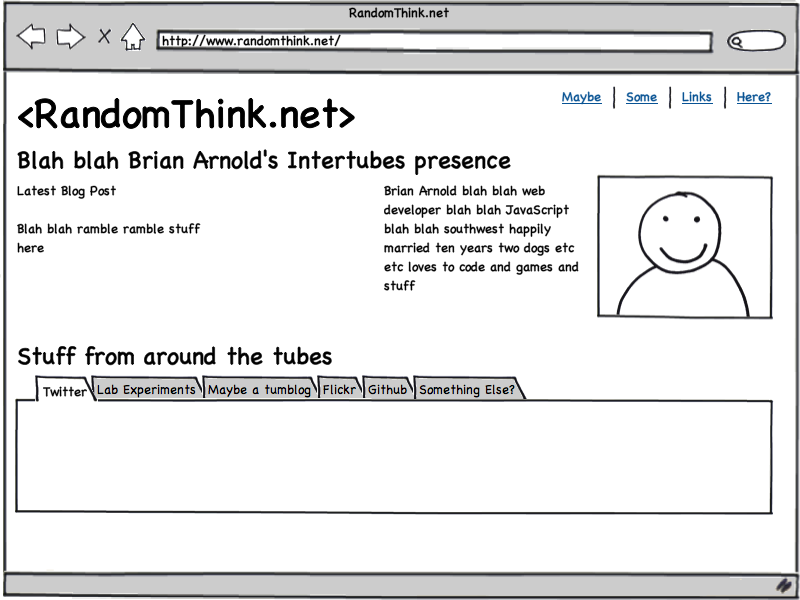

<div class="blog-index">
	<article>
		<h1>&lt;RandomThink.net&gt;</h1>
		<!-- Yes this is hacky, no I am not going to write an entire style to center one image for now -->
		
		<p>Hi! I'm Brian Arnold. I'm sorta-relaunching my personal site, but still working out exactly what I want to do. I'm totally open to suggestions, if you have any. The mockup above has been around awhile and while I'm not sure I'll actually be doing that right now, I do like the idea of something like it. For now, though, this is what I'm doing. Please don't hate me for it. I'm a JavaScript guy, not a designer.</p>
		<p>I'm a software developer living in the southwest, living and breathing JavaScript. I have a beautiful wife and have for over twelve years now, and we have a cute little boy and two adorable puppies. Life is pretty great.</p>
		<p>Anyhow, here's a few places you can find me, where I am active in varying degrees. Also, typically, anywhere that a username is involved, I'm brianarn - except YouTube, someone beat me there, and AIM (had it, but had to give it up when I quit working for AOL), but that's about it. Anyhow, links ahead.</p>
		<ul>
			<li><a href="http://twitter.com/brianarn">@brianarn</a> on Twitter &mdash; probably the easiest way to reach me, though that username at Gmail also works - y'know, if you like email.</li>
			<li><a href="/blog/">My blog</a>, which I'm kind of rebooting, so check it out.</li>
			<li><a href="http://facebook.com/brianarn">Me on Facebook</a> &mdash; I typically don't add people I don't really know, but if you know me and I know you, friend me maybe? I post pictures of my kid and more personal stuff here.</li>
			<li><a href="http://www.flickr.com/photos/brianarn">Photos on Flickr</a></li>
			<li><a href="http://github.com/brianarn">My repos on Github</a>, which are mostly half-finished, but you can also find the full source to my labs on there. Mostly JavaScript because that's what I love these days, and likely will for a long time.</li>
			<li><a href="http://youtube.com/brianarnold79">My YouTube profile</a> &mdash; not that I ever really post video, but hey, I mentioned that I don't have brianarn there, so I figured I should link it.</li>
			<li><a href="http://colorschemedesigner.com/#3u21Tw0w0w0w0">Color Scheme Designer</a>, with a template I'm considering for this site. The root blue is what you see as the background here. That link is set to complement, though I'm also considering triad.</li>
			<li>I've often on <a href="http://freenode.net/">freenode</a>, typically in <code>#dojo</code> and a few other rooms. My username there is brianarn, but if you've read this far you likely knew that.</li>
		</ul>
		<p>As part of the relaunch, here's a few posts I've written recently:</p>
		<ul>
		{% for post in site.posts limit: 3 %}
			{% include post/variables.html %}
			<li><a href="{{ title_url }}">{% if site.titlecase and page.titlecase != false %}{{ article_title | titlecase }}{% endif %}</a></li>
		{% endfor %}
		</ul>
	</article>
</div>
